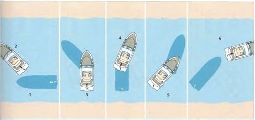

РАЗВОРОТ НА ОГРАНИЧЕННОМ ПРОСТРАНСТВЕ

- При использовании правостороннего винта приближайтесь с левой стороны на малой скорости. Руль резко поверните
вправо.
Лодка поворачивается в положение...
- ... Резко назад, пока лодка не потеряет скорость и не начнет двигаться задним ходом. Руль остается в правом
положении.
В любом случае, сейчас это не окажет никакого эффекта. Лодка поворачивается в положение...
- ... Остановитесь. Двигайтесь на полной скорости вперед, чтобы замедлить движение назад, пока лодка не достигнет
положения...
- ... Резко назад. Руль остается в правом положении. Движение руля назад толкает корму в положение...
- ... Остановитесь. Двигайтесь вперед на половине газа. Поверните руль в среднее положение и возьмите курс.
Этот манёвр необходимо уметь выполнять на лодке с жёстким валом. Его всегда начинают в сторону вращения
винта. Например, при правом вращении — вправо, потому что при движении назад винт создаёт наибольший боковой эффект.
Именно он позволяет развернуть лодку на пространстве меньшем, чем её обычный радиус циркуляции.
Манёвр демонстрирует два основных принципа, которые нужно учитывать при всех остальных манёврах:
- ► Короткий мощный импульс вперёд при повернутом руле сразу разворачивает лодку в сторону руля, но почти
не разгоняет её.
- ► Короткий мощный ход назад вызывает сильный вынос кормы в сторону вращения винта (боковой эффект), при
этом руль почти не действует. При этом лодка сначала останавливается и не набирает значительной скорости назад.
В целом действует правило: при движении назад руль работает лучше при небольшом угле перекладки.
Яхты с двумя двигателями разворачиваются на месте, включая один двигатель вперёд, а другой назад. Руль
остаётся в среднем положении. Изменяя обороты двигателей, лодку можно вращать почти на месте.
Двигатель, работающий назад, создаёт более сильный вращающий момент.
Назад Оглавление Вперед